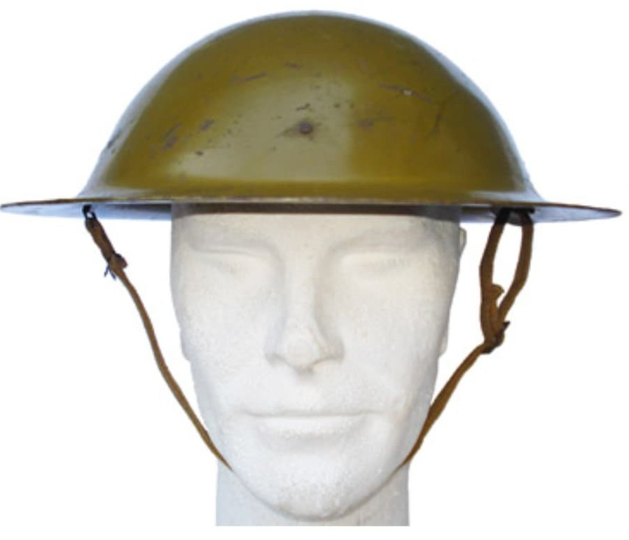
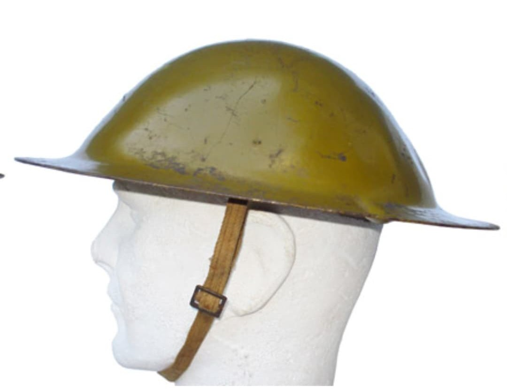
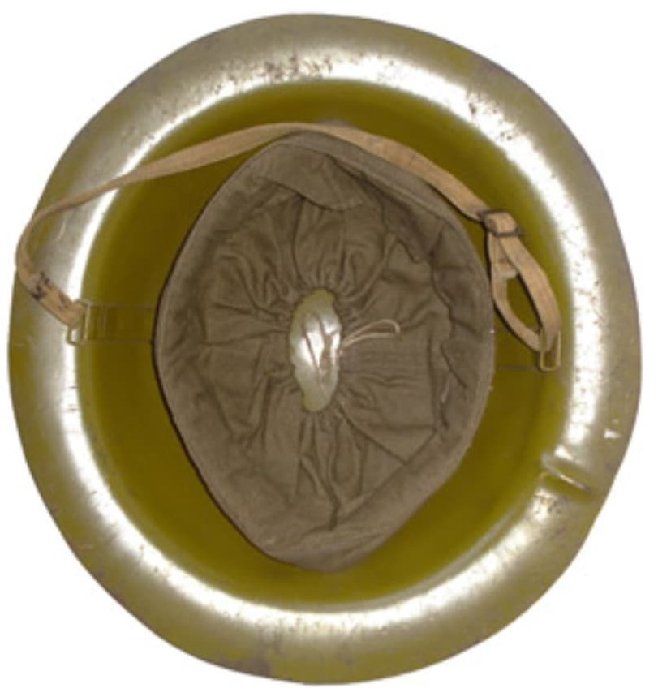

Le casque de la Défense Anti‑Aérienne soviétique, connu sous le nom de Шлем ПВО, est un modèle spécifique destiné aux unités de protection anti‑aérienne locales (МПВО). Contrairement aux casques militaires SSh‑36/39/40, ce casque possède une forme totalement différente, adaptée aux milices civiles et paramilitaires chargées de protéger la population contre les bombardements.
Fabriqué à partir de 1938, il est utilisé tout au long de la Seconde Guerre mondiale dans les grandes villes soviétiques.

Le casque PVO se distingue par :
Il est conçu pour résister aux éclats, débris, incendies et chutes d’objets lors des bombardements aériens.


La Défense Anti‑Aérienne locale (МПВО) est instaurée pour protéger la population soviétique contre les bombardements ennemis. Ses missions incluent :
Ce casque est emblématique des unités civiles mobilisées dans les grandes villes comme Moscou, Leningrad ou Stalingrad.